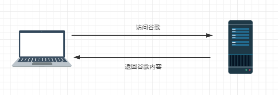
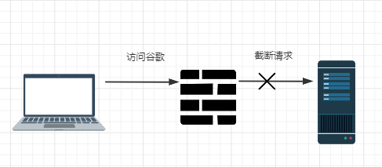
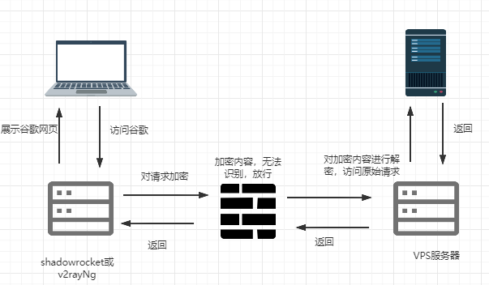

原理介绍
在自由的网络环境下，在本机上访问服务时是直接和远程服务建立连接传输数据，流程如图：
但是众所周知，国内网路是存在防火墙的(GFW)，你的每个网络请求，都会被GFW监测，当它发现你访问的是google，facebook这些网站时，就会把链接给你断开，这样你就访问不了这些网站了，如图：
当然防火墙不是什么请求都会给你截断的，只有一些特定网站(一般都是国外的，像谷歌，facebook这些)才会进行截断，像国内的(比如百度，淘宝)都是会给你放行的。 还有一点就是，防火墙只有在国内才会生效，你在美国访问google是根本不会被墙的
突破防火墙的方法一般如下图
既然国外网络访问谷歌是不会被墙的，那么我们可以购买一个国外的VPS服务器，我们所有访问谷歌的请求都由它来帮我们进行代理。所以我们需要一个能够把我们的请求转发到我们购买的VPS服务器的软件，这个软件在IOS上一般是shadowrocket，android上一般是v2rayNG。由它来代理我们所有的请求然后转发到这台VPS服务器上，这样就可以顺利访问google了，当然我们把请求转发到VPS服务器的过程是要经过防火墙的，而为了能不被防火墙识别出来，一般会会对原始请求进行加密，然后再在VPS那里解密成原始请求
经过上面的介绍，大致应该明白只需在手机上或电脑上安装一个软件来代理我们的请求就行了，请继续查看不同平台软件安装过程